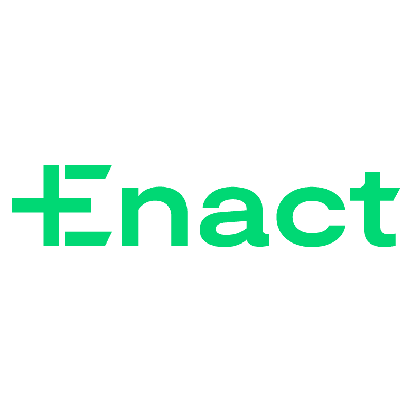

Professional Experience
My Career
Programming Counselor (June 2018-August 2018)
Software Engineer Intern (May 2019-January 2020)

Computer Vision Intern (May 2020-August 2020), Computer Vision Co-op (August 2020-December 2020)
Commonwealth Cyber Initiative Fellow (October 2020-May 2021)

Associate Full Stack Developer (Augusty 2020-Present)